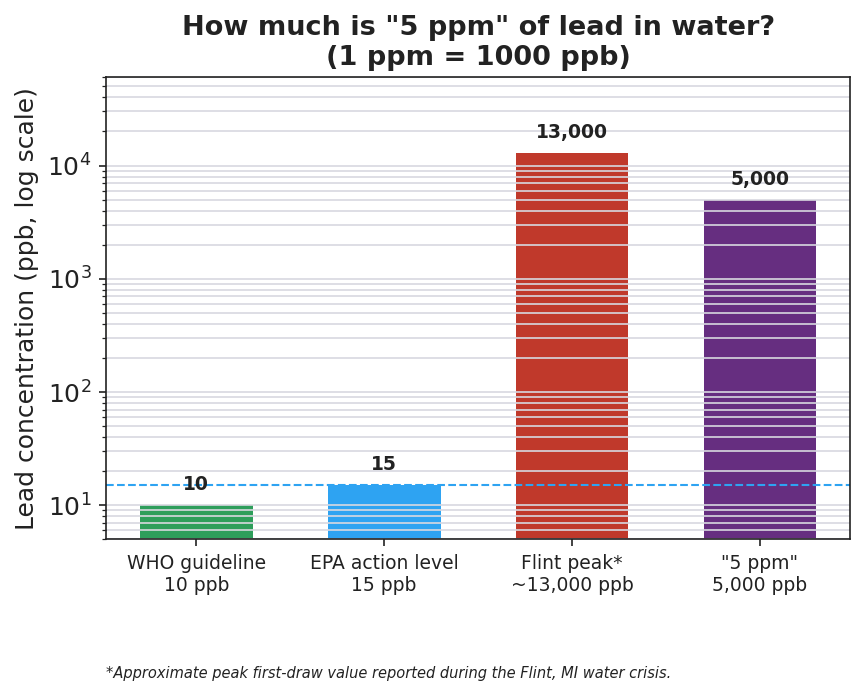

01 Phenomenon
A city sends out a water-quality notice: the tap water tested at 5 ppm of lead. A student reads it and shrugs: “Only 5? That’s basically nothing.” But one part per million (ppm) means one milligram of lead dissolved in one liter of water. The U.S. EPA action level — the point where a water system is legally required to act — is 15 ppb, which equals 0.015 ppm. So 5 ppm is more than 300 times the level where a city must intervene. The “tiny” number is actually a public-health emergency.
02 Driving question
What does "5 ppm of lead" actually mean — and how do chemists turn a vague "a little" or "a lot" into an exact number?
03 Notice & wonder
| I notice… | I wonder… |
|---|---|
Turn & Talk #1: Your teacher puts the same single drop of food coloring into a small (50 mL) cup and a large (500 mL) cup. The amount of dye is identical. In one sentence, why is the small cup so much darker?
04 Initial model
Before your teacher names the process: two solutions are made from the same amount of salt.
- Solution 1: 0.50 mol of NaCl dissolved in enough water to make 1.0 L of solution.
- Solution 2: 0.50 mol of NaCl dissolved in enough water to make 2.0 L of solution.
For each, write the ratio of moles of solute ÷ liters of solution:
| Solution | Moles of solute | Liters of solution | Ratio (moles ÷ liters) |
|---|---|---|---|
| 1 | 0.50 | 1.0 | |
| 2 | 0.50 | 2.0 |
Which solution is more concentrated? _______________
Both solutions contain the same number of moles of solute. Why are they not equally concentrated? _______________________________________________
What unit does your ratio come out in? _______________
05 Investigate
Part 1 — ABCs: Rank before you calculate
Before any formula, rank these four solutions from most dilute (1) to most concentrated (4) using only the ratio of solute to solution.
| Solution | Solute | Solution amount | Ratio (solute ÷ water) | My rank (1–4) |
|---|---|---|---|---|
| A | 1 spoon salt | 1 cup water | ||
| B | 1 spoon salt | 4 cups water | ||
| C | 2 spoons salt | 1 cup water | ||
| D | 2 spoons salt | 4 cups water |
After you fill in the ratios, answer:
Which solution is most concentrated? _______________ Which is most dilute? _______________
Solutions A and D both seem to have “1 and 1” or “2 and 4.” Are they equally concentrated? Show the ratios to decide.
Part 2 — Three ways to describe ONE solution
A solution is made by dissolving 40.0 g of NaOH in water to make 0.500 L of solution. The total mass of the solution is 520 g. (The gram formula mass of NaOH is 40.0 g/mol, from Lesson 06.)
(a) Molarity — Molarity = moles of solute ÷ liters of solution. First convert grams to moles using GFM.
moles of NaOH = 40.0 g ÷ 40.0 g/mol = _______ mol Molarity = _______ mol ÷ 0.500 L = _______ mol/L (___ M)
(b) Percent by mass — % by mass = (mass of solute ÷ mass of solution) × 100.
% by mass = (40.0 g ÷ 520 g) × 100 = _______ %
(c) Parts per million — ppm = (mass of solute ÷ mass of solution) × 1,000,000.
ppm = (40.0 g ÷ 520 g) × 1,000,000 = _______ ppm
- Parts (b) and (c) use the exact same fraction. What is the only difference between the percent-by-mass formula and the ppm formula?
Part 3 — Reading the figure
Look at figures/lead_concentration_ppb.png:

The chart uses ppb (parts per billion). Convert the phenomenon’s 5 ppm into ppb. (Hint: 1 ppm = 1,000 ppb.) _______________ ppb
The EPA action level is 15 ppb. The dashed line marks it. Is the “5 ppm” bar above or below that line? _______________
The number 5 sounded small at the start of class. Use the chart to explain in one sentence why 5 ppm of lead is actually dangerous.
06 Make it make sense
For the solution below, calculate the concentration three ways. Show all work. This is the same NaOH solution from the Investigation — confirm your work here.
Solution: 40.0 g of NaOH dissolved to make 0.500 L of solution; total solution mass 520 g; GFM of NaOH = 40.0 g/mol.
1. Molarity (mol/L):
moles of NaOH = ______________________ Molarity = ______________________ = _______ M
2. Percent by mass (%):
% by mass = ______________________ = _______ %
3. Parts per million (ppm):
ppm = ______________________ = _______ ppm
4. Dilution. You take 50.0 mL of the 2.00 M NaOH solution and add water until the total volume is 200. mL. Use M₁V₁ = M₂V₂ to find the new molarity.
M₁V₁ = M₂V₂ → (2.00 M)(50.0 mL) = M₂(200. mL) M₂ = ______________________ = _______ M
07 Key vocabulary
- molarity
- the number of moles of solute dissolved in one liter of solution; found by dividing moles of solute by liters of solution; the unit is mol/L, abbreviated M; the chemist's standard concentration measure
- solute
- the substance that is dissolved in a solution (e.g., the NaOH, the salt, the lead); it is the quantity that goes on top of every concentration ratio
- solution
- a homogeneous mixture of a solute dissolved in a solvent (the whole mixture, solute plus solvent); it is the quantity in the denominator of every concentration ratio, so concentration always measures solute relative to the whole solution
Use each term in a sentence about today’s investigation. Do not copy the definition — describe something you actually did or observed.
molarity: _______________________________________________ _______________________________________________
solute: _______________________________________________ _______________________________________________
solution: _______________________________________________ _______________________________________________
08 Revise your model
Return to your Initial Model (the two NaCl solutions). Add vocabulary labels:
Draw a box around the ratio (moles ÷ liters). Label it “concentration ratio.”
Circle the more concentrated solution. Label it with the correct unit: _______________
Write a revised appositive sentence for the result you calculated:
The molarity of Solution 1 — ___ M — is found by _______________________________________________
Then finish this Because / But / So sentence:
A city’s water tests at 5 ppm of lead, even though 5 sounds like a tiny number. because __________________________________________, but __________________________________________, so __________________________________________.
09 Exit ticket
(a) Calculate the molarity of a solution made by dissolving 0.25 mol of KCl in enough water to make 0.50 L of solution. Show your work and the unit.
moles of solute = _______ ÷ liters of solution = _______ Molarity = _______ mol/L (___ M)
(b) A solution contains 15 g of sugar dissolved in a solution with a total mass of 300 g. Calculate the percent by mass of sugar.
% by mass = (_______ g ÷ _______ g) × 100 = _______ %
(c) You take 100. mL of 6.0 M HCl and dilute it to 300. mL. Use M₁V₁ = M₂V₂ to find the new molarity.
M₁V₁ = M₂V₂ → (_______)(_______) = M₂(_______) M₂ = _______ M
10 Explore further
- Molarity lab — preparing a standard solution: Each group prepares a known volume of a solution of a colored salt (e.g., CuSO₄ or NaCl with a dye) at a target molarity. Students calculate the mass of solute needed (mass = molarity × volume × gram formula mass), weigh it on a balance, dissolve it, and fill a volumetric flask to the calibration line. The lab makes molarity physical: students *make* a 0.50 M solution and see that "0.50 mol per liter" is a recipe, not an abstraction. Tie the volumetric-flask "fill to the line" step back to the Lesson 06 (Gram Formula Mass) skill — they need GFM to convert moles to the grams they weigh out.
- Dilution practice — serial dilution demo: Starting from a concentrated colored stock, students dilute by factors of ten (1 mL stock + 9 mL water, repeated). The color fades visibly at each step, giving a sensory anchor for M₁V₁ = M₂V₂: as volume goes up, concentration comes down in exact proportion. Connect the faintest tube to "5 ppm looks like nothing, but it is still there."
- ppm reading from a label: Students read the parts-per-million figures on a real bottled-water or sports-drink label (sodium, fluoride) and convert mg/L ↔ ppm to confirm 1 mg/L = 1 ppm in dilute water solutions.